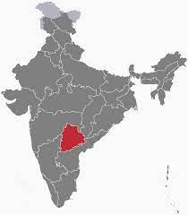

The word "Telinga" changed over time to "Telangana"and the name "Telangana" was designated to distinguish the predominantly Telugu-speaking region of the erstwhile Hyderabad State from its predominantly Marathi-speaking one, Marathwada.Telangana, as a geographical and political entity was born on June 2, 2014 as the 29th and the youngest state in Union of India. However, as an economic, social, cultural and historical entity it has a glorious history of at least two thousand five hundred years or more. After 4 years of peaceful and impactful protests, the UPA government started the statehood process in July 2013 and concluded the process by passing the statehood bill in both houses of Parliament in Feb 2014. In the General Elections held in April 2014, Telangana Rashtra Samithi emerged victorious by winning 63 of the 119 seats and formed the government. Sri K Chandrashekar Rao was sworn in as the First Chief Minister of Telangana. The Telangana state was inaugurated formally on June 2nd 2014.